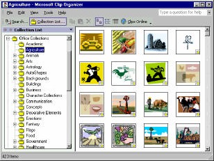
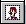
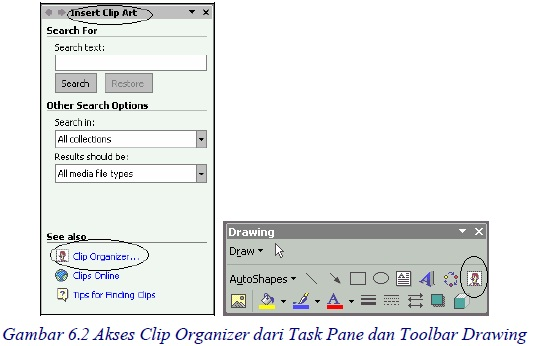
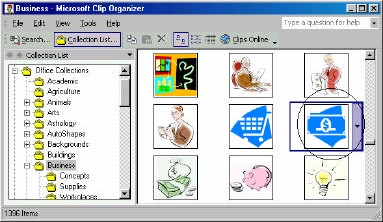
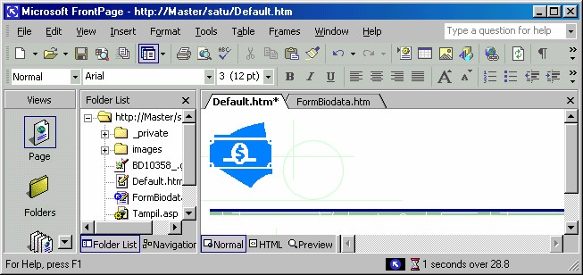
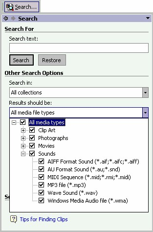
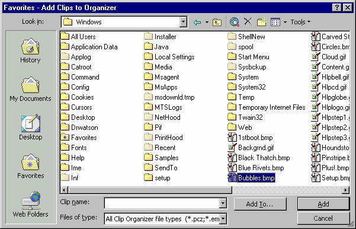
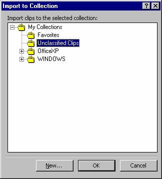
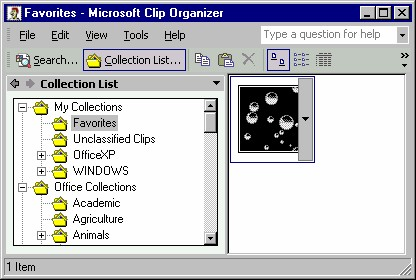
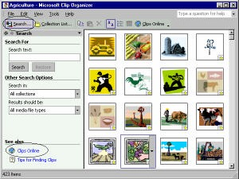

1. Clip Organizer
Selain canggih, mampu menganalisa data, FrontPage XP juga dilengkapi fasilitas
untuk menghasilkan berbagai bentuk gambar. Anda bisa mengambil gambar yang
disediakan atau bisa juga menggambarnya sendiri menurut selera Anda. Anda
bahkan bisa menambahkan klip multimedia pada lembar kerja Anda.
FrontPage XP memiliki beberapa alat untuk menambahkan objek gambar pada buku
kerja atau grafik Anda. Anda dapat menambahkan objek gambar yang dibuat dengan
program lain, gambar dari Clipart bahkan Anda dapat membuat gambar Anda
sendiri dengan menggunakan toolbar Drawing.
1.1 Memakai Clip Organizer
Clip Organizer adalah kumpulan klip berbagai media seperti suara, gambar, foto
bahkan video.

Gambar 6.1 Clip Organizer
Anda dapat membuka Clip Galerry dengan melakukan salah satu dari langkah ini:
• Klik tombol Insert Clip Art ( ) pada toolbar Drawing.
• Dari menu Insert pilihlah Picture lalu klik Clip Art.
Kedua cara di atas akan membuka Task Pane dengan tema Insert Clip Art.
Kemudian klik icon Clip Organizer, muncul Clip Organizer seperti Gambar 6.1 di
atas

1.2 Memasang klip ke halaman
Pada Clip Organizer telah tersedia berbagai jenis gambar (di bidang sebelah kanan),
dan kategori gambar, berupa folder di bidang sebelah kiri.
Dengan berbagai objek tersebut maka halaman kita menjadi lebih informatif dan
jauh lebih menarik.
Untuk menyisipkan klip ke dalam halaman, langkahnya adalah:
1. Aktifkan halaman yang akan dipasang klip.
2. Bukalah Clip Organizer seperti telah diterangkan sebelumnya.
3. Kemudian klik folder sesuai kategori klip yang akan disisipkan pada
halaman, misalnya Office Collections _ Bussiness (berisi gambar-gambar
tentang kegiatan bisnis).
4. Klik pada klip yang paling Anda sukai, misalnya seperti Gambar 6.3. Tampil
pop-up menu, lalu pilihlah perintah Copy.

Gambar 6.3 Koleksi Bussiness
5. Kemudian klik lokasi yang Anda inginkan di halaman, lalu klik kanan dan
pilihlah Paste . Klip akan muncul di lokasi tersebut.

Gambar 6.4 Klip muncul halaman
6. Kita bisa mengubah ukuran klip sesuai yang kita inginkan dengan cara klik
lalu drag handle klip.
7. Kita bahkan bisa mengedit gambar yang ada dengan menggunakan toolbar
Picture.
1.3 Mencari klip
Clip Organizer bisa digunakan untuk mencari klip lalu dipasangkan ke Clip Gallery,
sehingga mudah untuk melihatnya dan mudah pula untuk memasangnya ke dokumen
kita. Cara pencarian ini dengan memanfaatkan tombol Search, yang akan
menampilkan Task Pane tema Search.

Gambar 6.5 Task Pane Pencarian
• Kalau Anda tahu namanya, tuliskan pada kotak isian Search for, lalu klik
Search.
• Jika Anda ingin mempertajam kriteria pencarian, gunakan dua kategori yang
telah disediakan, yaitu Search in untuk membatasi lokasi tujuan pencarian
dan Results should be untuk menentukan jenis format klip. Setelah
menentukan kriteria, klik Search.
1.4 Menambah koleksi klip
Kalau Anda mempunyai klip favorit, Anda bisa menambahkan-nya ke Clip Gallery.
Dengan demikian dilain waktu, Anda tinggal mengambilnya dari Clip Gallery. Cara
memasukkannya adalah:
1. Jalankan Clip Organizer lalu aktifkan File _ Add clips to Organizer on my
own.Muncul kotak dialog Unclassified Clips - Add clip to Organizer seperti
Gambar 6.6.

Gambar 6.6 Kotak dialog penambahan clip
2. Pada kotak dialog tersebut carilah file klip yang Anda inginkan pada kotak Look
in. Klip tersebut misalnya file gambar bernama Bubbles.bmp.
3. Anda bisa menentukan agar klip ini dimasukkan ke kategori tertetntu dengan
klik tombol Add to, muncul kotak dialog Import to Collection.

Gambar 6.7 Import to Collection
4. Lalu pilihlah folder kategori, misalnya Favorites. Klik OK, kembali ke kotak
dialog pertama.
5. Klik tombol Add. Proses pemasukkan berlangsung beberapa saat. Hasilnya
seperti Gambar 6.8, klip Bubbles.bmp masuk ke kategori Favorites di Clip
Gallery.

Gambar 6.8 Clip baru
1.5 Download klip
Kita bisa mendapatkan klip tambahan dari lokasi Web Microsoft dengan cara:
1. Klik tombol Search Internet di sudut kiri atas Clip Gallery. Muncul Task Pane
dengan tema Search.

Gambar 6.9 Men-download clip
2. Klik icon Clips Online, Internet Explore akan dijalankan dan membuka situs
Microsoft. Dari sana Anda bisa mengambil Clip Art pilihan Anda sendiri.
Copyright © Herlan Lesmana
Created with the Freeware Edition of HelpNDoc: Free CHM Help documentation generator